Chapter 23: Loose Ends
Back to Top
The Four Myths
Figure 23-1
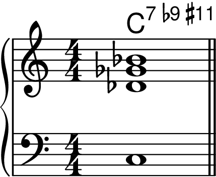
Figure 23-2
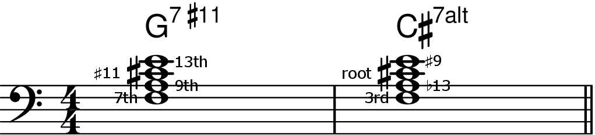
Figure 23-3
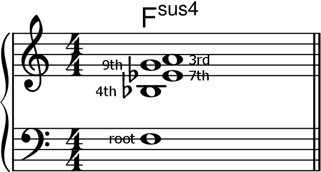
Figure 23-4
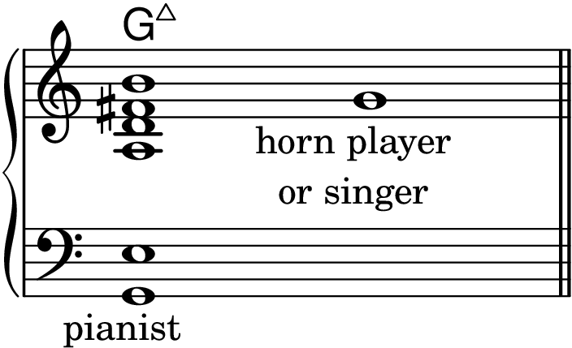
The Harmonic Minor Scale
Figure 23-5
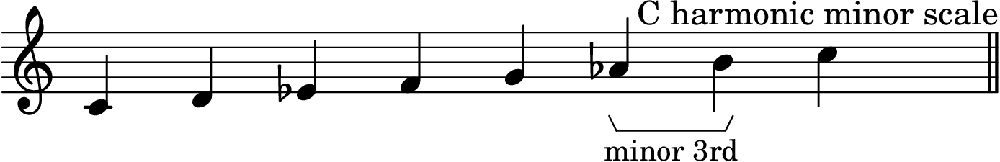
Figure 23-6
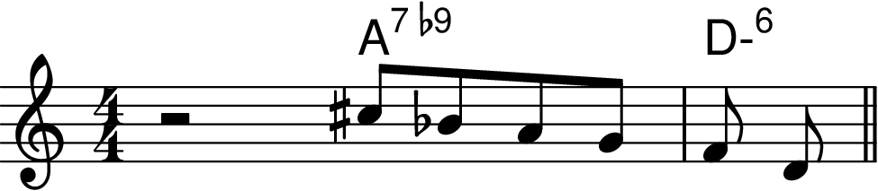
Figure 23-7
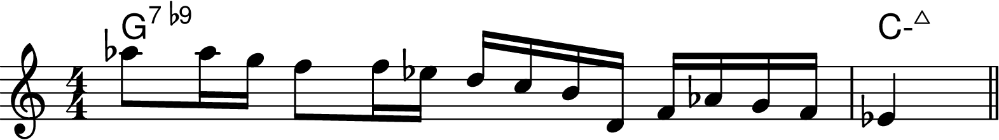
Figure 23-8
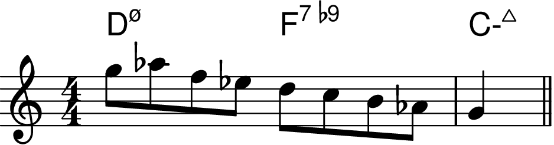
Figure 23-9
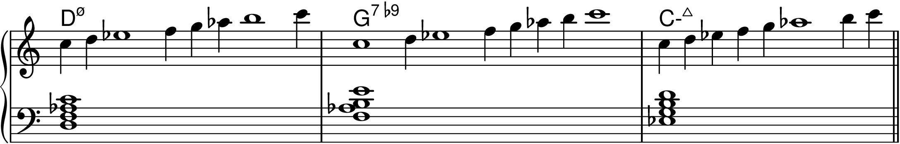
Figure 23-10
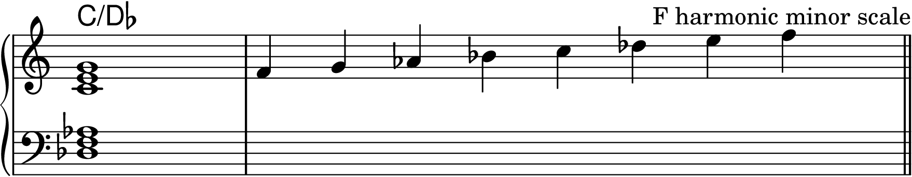
The Harmonic Major Scale
Figure 23-11
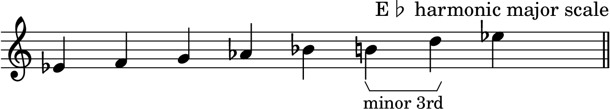
Figure 23-12
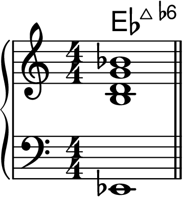
Figure 23-13

Figure 23-14
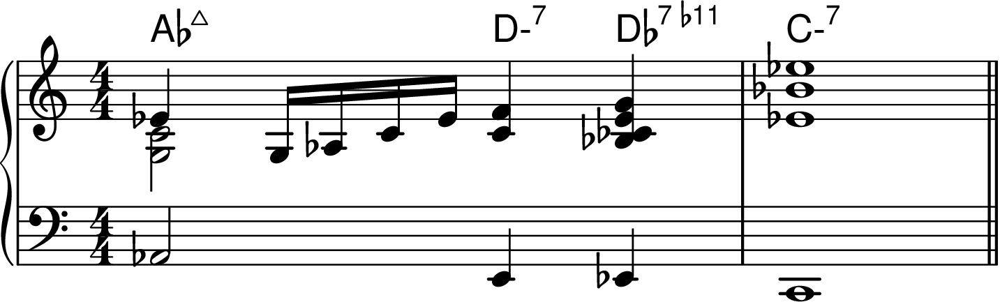
Figure 23-15
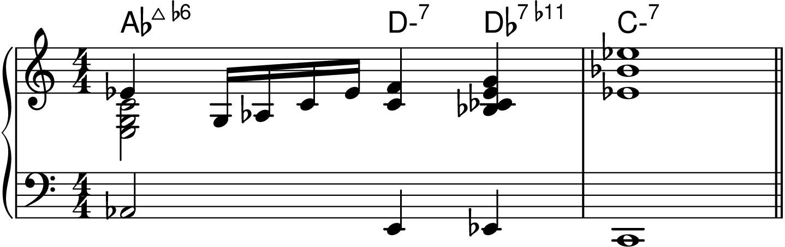
Figure 23-16
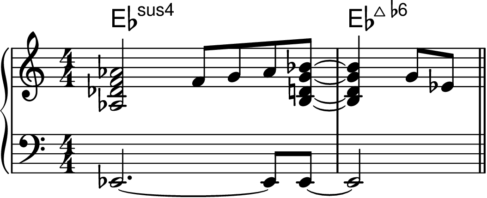
Four-Note Scales
Figure 23-17
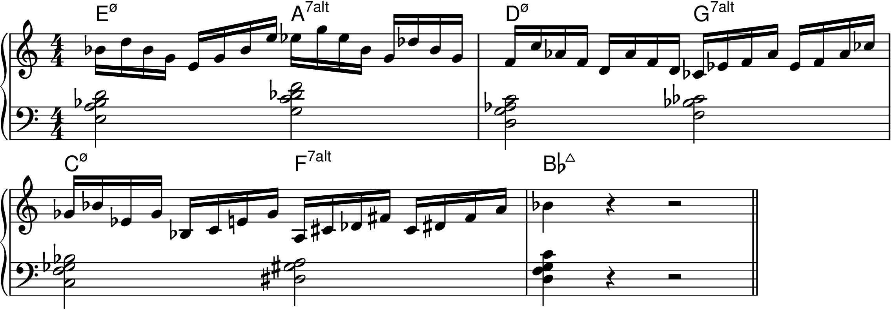
Figure 23-18
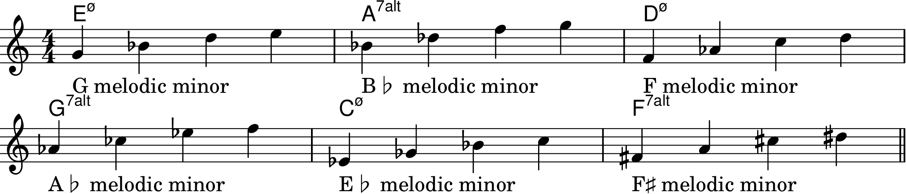
Figure 23-19
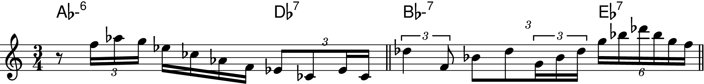
Figure 23-20
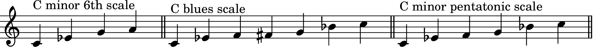
Figure 23-21
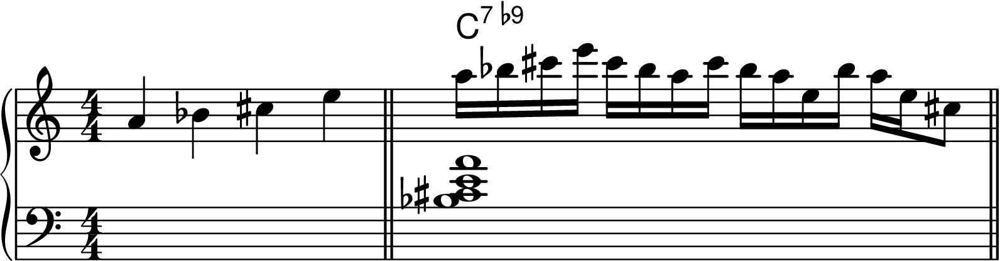
The Limitations of Traditional Theory
Figure 23-22
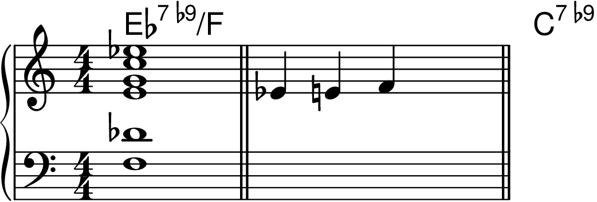
Figure 23-23
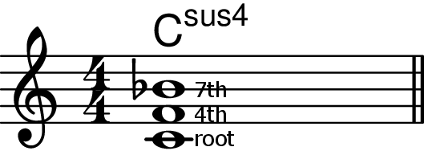
Figure 23-24
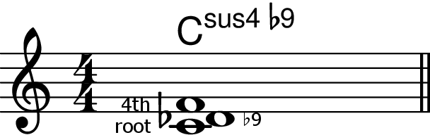